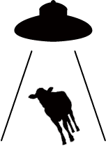

ABOUT
チーズアカデミーについて
チーズアカデミーは、チーズ職人養成学校です。
チーズの素晴らしさを、自給自足を通じて、できるだけ多くの人に知っていただきたい。
そして、食卓にはいつもチーズがあった、あの頃の当たり前をこの手で取り戻したい。
そんな思いから、チーズ職人養成学校「チーズアカデミーTOKYO」は歩みを始めています。
卒業後、チーズ自給自足のバックアップはもちろんのこと、
チーズ職人への就職・転職もサポートします。
チーズアカデミー代表 チーズ太郎

COURSE
コース
未経験からでもスタートができるよう、カリキュラムは多くの専門家や
現役チーズ職人のアドバイスのもと、作られました。
本格的な農園を使った実地研修
チーズアカデミーでは、本格的な農園を使った実地研修を 行うことができます。プロとして活躍するチーズ職人も 使用するような、広大で環境も整った農園を余すところ なく使い、卒業時には本格的なチーズを自分の力で作れる 実践力の養成を目指します。必要な知識もしっかりと取得
チーズ作りには、しっかりとした食に関する知識が 欠かせません。チーズアカデミーでは、一流講師陣による、 チーズ作りに必要ないろはを余すところなく学べます。 チーズそのものでなく、栄養学全般を学ぶことも 可能ですので、チーズ以外への展開も夢ではないでしょう。卒業制作はティスティング審査あり
チーズアカデミーでは最後の2ヶ月間で卒業制作を実施。 卒業制作として、チーズ作りを実際に行います。卒業後、 一般参加によるティスティング審査があるため、作り手の 目線だけでなく、消費者の目線から、卒業制作作品としての チーズを、しっかりと評価いただくことができます。NEWS
ニュース

ACCESS
会社概要
- 学校名
- チーズアカデミーTOKYO
- 事務所所在地
- 〒107-0061東京都港区北青山3-5-6 青朋ビル2F
- TEL
- 03-5413-5045
- FAX
- 03-5413-5046
- dummy@cheeseacademy.tokyo
CONTACT
説明会お申し込み・お問い合わせ
ぜひ1度、足を運んでみませんか。説明会は随時開催中。
その他、お問い合わせもお気軽にどうぞ。お待ちしております。
※チーズアカデミーは実際には存在しません。
間違っても問い合わせしないようお願いいたします。